Hierarchy of Visual Features
Why groups beats trends, but error bands beat groups
Susan VanderPlas
March 30, 2015
Outline
- Psychology of Perception
- Preattentive Features
- Gestalt Laws of Perception
- Experiment
- Results
- Conclusions
- Future Work
The Psychology of Perception
Preattentive Feature Detection

Preattentive Feature Detection
Ç. Demiralp, et al. (2014) experimentally established perceptual kernels indicating feature similarity for shape and color palettes:


Preattentive Feature Detection
Features with large distances in perceptual space are distinguished and perceived more quickly and easily.
Preattentive Feature Detection
 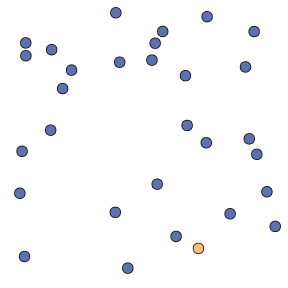
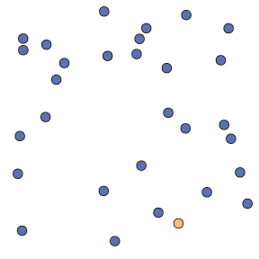

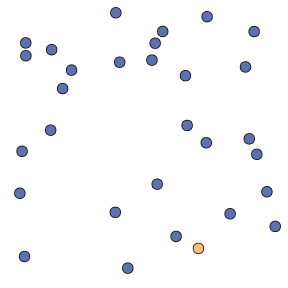
Combinations of preattentive features interfere with each other and are not preattentive.
Perception of Statistical Plots
- We don't perceive plots preattentively, but some research has studied preattentive plot perception (Healy & Enns, 1999, 2012)
- Rough hierarchy of graphical features (accuracy):
| color ** | $$>$$ | shape intensity letters (HQX) |
$$>$$ | letters (HEF) |
Cleveland & McGill (1985), Lewandowsky & Spence (1989)
Gestalt Psychology

"The whole is other than the sum of the parts"
Gestalt Laws of Perception
- Rules that make sense of complex visual information through experience
- "Top-down" - organize information hierarchically
- Gestalt psychology focuses on the process of perception,
without breaking "whole" processes into small (meaningless) components
Gestalt Laws - "Good Gestalt"

Every pattern is seen so that the resulting structure is as simple as possible
Gestalt Laws - Closure

Shapes are perceived as whole even if they are not complete.
Gestalt Laws - Proximity

Things that are close (in space) appear to be grouped
Gestalt Laws - Similarity


Similar items appear to be grouped together.
Gestalt Laws - Continuity


Objects that can be connected to form straight lines or smooth curves seem to belong together.
Gestalt Laws - Continuity


Lines seem to follow the smoothest path
Gestalt Laws - Common Region

Objects in a common region seem to belong together.
Experiment:
How do plot aesthetics affect perception of statistical plots with competing signals?
Lineups

Data-Generating Models

Provides participants with ambiguous distractor plots generated from a mixture of the two target models
Lineups

Plot Aesthetic Combinations
| Line Emphasis | ||||
| Strength | 0 | 1 | 2 | |
| Cluster Emphasis |
0 | Plain | Line | Line + Pred. Interval |
| 1 | Color Shape |
Color + Line | ||
| 2 | Color + Shape Color + Ellipse |
Color + Ellipse + Line + Pred. Interval |
||
| 3 | Color + Shape + Ellipse | |||
Gestalt Heuristics and Aesthetics
Line Target Plots
| 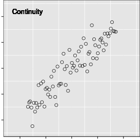 | 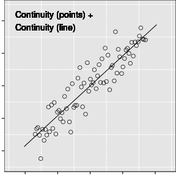 |

|
Gestalt Heuristics and Aesthetics
Cluster Target Plots

|
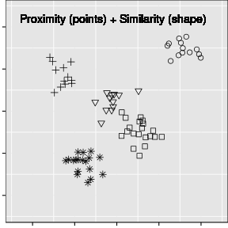 |

|
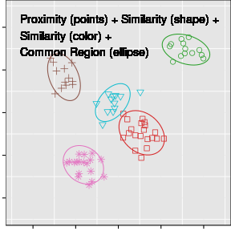 |
| 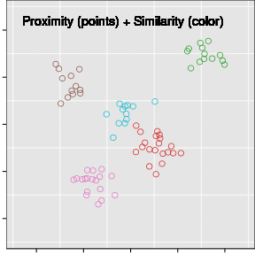 |

|
Gestalt Heuristics and Aesthetics
Mixed Signals

|

|
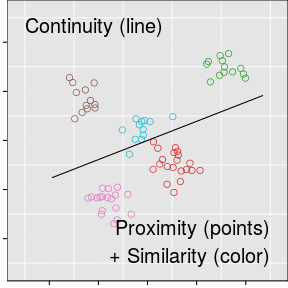 |

|
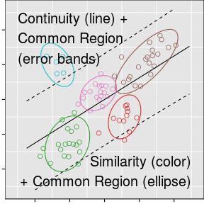 | 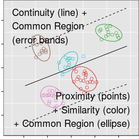 |
Manipulated Variables
Model Parameters
- Trend Strength $\sigma_T$ (easy, medium, hard)
- Cluster Strength $\sigma_C$ (easy, medium, hard)
- Number of Clusters $K$ (3, 5)
Plot Aesthetics
- Plain
- Trend
- Trend + Error
- Color + Trend
- Color + Ellipse +
Trend + Error
- Color
- Shape
- Color + Shape
- Color + Ellipse
- Color + Shape +
Ellipse
Data Collection
- Participants recruited through Amazon Mechanical Turk to complete 10 plot evaluations
- Experiment ran for
23.8hours -
1356individuals completed13519evaluations - Remove data from participants who did not complete 10 trials (
159participants,1060trials) and any trials in excess of 10 (421trials)
Final data: 12010 trials completed by 1201 participants.
Data Collection
Participants provided:
- Demographic information: age range, gender, education level
- 10 plot evaluations
- Target plot identification (one or more plots)
- Confidence level (1 = least, 5=most)
- Reasoning
(i.e. "Strongest linear relationship" or "Clustered points")
Final data: 12010 trials completed by 1201 participants.
Target Identification

Line Target Identification

Cluster Target Identification